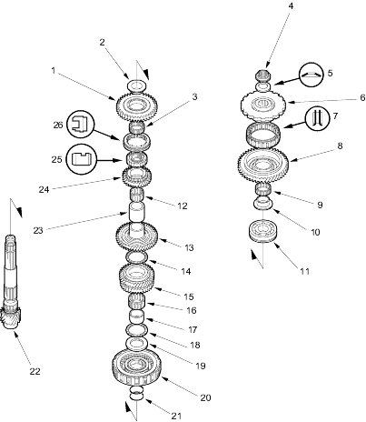

 |
- REVERSE GEAR
- REVERSE GEAR COLLAR
- NEEDLE BEARING
- LOCKNUT (FLANGE NUT)
23 x 1.25 mm, 103 Nm (10.5 kgf/m, 75.9 lbf/ft) – 0-103 Nm (10.5 kgf/m, 75.9 lbf/ft)
- CONICAL SPRING WASHER
Replace
- PARK GEAR
- ONE-WAY CLUTCH
- 1ST GEAR
- NEEDLE BEARING
- 1ST GEAR COLLAR
- TRANSMISSION HOUSING COUNTERSHAFT BEARING
- NEEDLE BEARING
- 2ND GEAR
- THRUST NEEDLE BEARING
- 3RD GEAR
- NEEDLE BEARING
- 3RD GEAR COLLAR
- THRUST NEEDLE BEARING
- SPLINED WASHER
- 3RD CLUTCH
- O-RINGS, Replace
- COUNTERSHAFT
- DISTANCE COLLAR, 28 mm
Selective part
- 4TH GEAR
- REVERSE SELECTOR HUB
- REVERSE SELECTOR
|